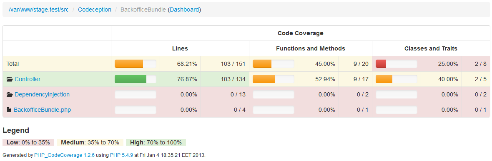

How many can you name?
See also: Unit Tests
See also: Functional Tests
See also: Web Services
"There are no solutions, only trade-offs." ~ Paul M. Jones
composer require --dev "codeception/codeception:^2"./vendor/bin/codeceptwget http://codeception.com/codecept.pharcurl http://codeception.com/codecept.phar -o codecept.pharalias codecept="php /path/to/codecept.phar"codecept help - general helpcodecept list - list commandscodecept help [command] - help for a specific command, e.g. listSee also: Commands
codecept bootstrap -e-e, --empty - don't create standard suitescodeception.yml - global settings for paths, runners, modules, etc.tests/
_bootstrap.php - bootstraps test suite, e.g. autoloading_data/dump.sql - SQL dump loaded between tests_envs/ - global environment-specific settings_output/ - test suite output, e.g. log files, coverage reports_support/ - test suite-specific helper class files
{
"autoload": {
"psr-4": {
"Vendor\\Subnamespace\\": "src/"
}
}
"autoload-dev": {
"psr-4": {
"Vendor\\Tests\\Subnamespace\\": "tests/"
}
}
}
// tests/_bootstrap.php
// Add the line below this one
require __DIR__ . '/../vendor/autoload.php';
See also: Cept, Cest, and Test Formats
$I = new ApiTester($scenario);
$I->wantTo('retrieve a single question');
$I->amAuthenticated();
$I->sendGET('2/questions/2');
$I->seeResponseCodeIs(200);
$I->seeResponseIsJson();
$I->seeResponseContainsJson([
'id' => 2,
'text'=>'Are you feeling well?'
]);
class QuestionCest {
public function _before(ApiTester $I) {
// ...
}
public function _after(ApiTester $I) {
// ...
}
public function getSingleQuestion(ApiTester $I) {
// Cept contents without $I assignment go here
}
// More test methods go here
}
codecept generate:suite apitests/api.suite.ymltests/api/_bootstrap.phptests/_support/Helper/Api.php
# tests/api.suite.yml
class_name: ApiTester
modules:
enabled:
- \Helper\Api
# Add the lines below
- REST:
# Your base API URL
url: http://host/api/
# Can also be a framework module name
depends: PhpBrowser
# Limits PhpBrowser to JSON or XML
part: Json
See also: REST module
// tests/api/_bootstrap.php
// Here you can initialize variables that will be
// available to your tests
// tests/_support/Helper/Api.php
namespace Helper;
// here you can define custom actions
// all public methods declared in helper class will be
// available in $I
class Api extends \Codeception\Module
{
}
// tests/_support/Helper/Api.php
namespace Helper;
class Api extends \Codeception\Module {
public function amAuthenticated(
$username = 'default_user'
) {
// $token = ...
$this
->getModule('REST')
->amBearerAuthenticated($token);
}
}
codecept buildtests/_support/ApiTester.phptests/_support/_generated/ApiTesterActions.phpcodecept generate:cest api Thing
// tests/api/ThingCest.php
use ApiTester;
class ThingCest {
public function _before(ApiTester $I) {
}
public function _after(ApiTester $I) {
}
// tests
public function tryToTest(ApiTester $I) {
}
}
// tests/api/ThingCest.php
use ApiTester;
class ThingCest {
public function createThing(ApiTester $I) {
$I->amAuthenticated('johndoe');
// ...
}
}
// Authentication
$I->amHttpAuthenticated('username', 'password');
$I->amDigestAuthenticated('username', 'password');
$I->amBearerAuthenticated('token');
// Headers
$I->haveHttpHeader('name', 'value');
// Method / Parameters
$I->sendGET('path/relative/to/url' /* , array $params */);
$I->sendHEAD(...);
$I->sendOPTIONS(...);
$I->sendPOST(
'url' /* ,
array|JsonSerializable|string $params,
array $files
*/);
$I->sendPUT(...);
$I->sendPATCH(...);
$I->sendDELETE(...);
$I->sendLINK(
'url',
[ 'linkEntry1', 'linkEntry2', /* ... */ ]
);
$I->sendUNLINK(...);
$I->dontSeeResponseCodeIs(200);
$I->seeResponseCodeIs(200);
$I->dontSeeHttpHeader('name'/* , 'value' */);
$I->seeHttpHeader('name'/* , 'value' */);
$I->seeHttpHeaderOnce('name');
$value = $I->grabHttpHeader('name', true);
$values = $I->grabHttpHeader('name');
$I->seeResponseEquals('text');
$I->dontSeeResponseContains('text');
$I->seeResponseContains('text');
$response = $I->grabResponse();
$I->seeResponseIsJson();
$I->seeResponseJsonMatchesXpath('//property');
$I->dontSeeResponseContainsJson(['property' => 'value']);
$I->seeResponseContainsJson(['property' => 'value']);
$I->dontSeeResponseJsonMatchesJsonPath('$.property'); // [1]
$I->seeResponseJsonMatchesJsonPath('$.property');
$data = $I->grabDataFromResponseByJsonPath('$.property');
$I->dontSeeResponseMatchesJsonType(['property' => 'type']); // [2]
$I->seeResponseMatchesJsonType(['property' => 'type']);
[1] Needs flow/jsonpath in composer.json
[2] See this manual page for type notation
$->seeResponseIsXml();
$I->dontSeeXmlResponseEquals('xml string');
$I->seeXmlResponseEquals('xml string');
$I->dontSeeXmlResponseIncludes('xml substring');
$I->seeXmlResponseIncludes('xml substring');
$I->dontSeeXmlResponseMatchesXpath('//element');
$I->seeXmlResponseMatchesXpath('//element');
$attribute = $I->grabAttributeFrom('//element', 'attribute');
$value = $I->grabTextContentFromXmlElement('//element');
assert*() methods from PHPUnit to $Igrab*() methodscodecept build!
# tests/api.suite.yml
class_name: ApiTester
modules:
enabled:
# ...
- Asserts
// tests/api/ThingCest.php
$response = $I->grabResponse();
$I->assertRegExp('/^foo/', $response);
See also: Asserts module
// tests/api/ThingCest.php
use ApiTester;
class ThingCest {
public function createThing(ApiTester $I) {
$I->wantTo('retrieve a single thing');
$I->amAuthenticated();
$I->haveHttpHeader('Content-Type', 'application/json');
$I->sendPOST('thing', ['name' => 'Foo']);
$I->seeResponseCodeIs(200);
$I->seeResponseIsJson();
$I->seeResponseContainsJson([
'id' => 1,
'name' => 'Foo'
]);
}
}
1 Userland library
2 Core extension
3 PECL extension
_data/dump.sql before each test
# codeception.yml
# ...
modules:
config:
Db:
dsn: ''
user: ''
password: ''
dump: tests/_data/dump.sql
See also: Db
codecept generate:helper Db
// tests/_support/Helper/Db.php
namespace Helper;
// here you can define custom actions
// all public methods declared in helper class will be
// available in $I
class Db extends \Codeception\Module
{
}
See also: Helpers
class Db extends \Codeception\Module\Db {
protected function cleanup() {
// ...
$dbh->exec('SET FOREIGN_KEY_CHECKS=0');
$res = $dbh->query(
"SHOW FULL TABLES WHERE TABLE_TYPE LIKE '%TABLE'"
);
foreach ($res->fetchAll() as $row) {
$dbh->exec('TRUNCATE TABLE `' . $row[0] . '`');
}
$dbh->exec('SET FOREIGN_KEY_CHECKS=1;');
// ...
}
}
See also: Customizing Codeception Database Cleanup
# tests/api.suite.yml
class_name: ApiTester
modules:
enabled:
- \Helper\Db
# ...
codecept build
haveInDatabase() method
use League\FactoryMuffin\Facade as FactoryMuffin;
$faker = Faker\Factory::create();
FactoryMuffin::define('Model_Login', [
'first_name' => $faker->firstName,
'last_name' => $faker->lastName,
'email' => 'unique:safeEmail',
'password' => function() {
return Model_Login::hash_password('password');
},
]);
See also: Data
composer require --dev "codeception/phpbuiltinserver:^1"
# codeception.yml
extensions:
enabled:
- Codeception\Extension\PhpBuiltinServer
config:
Codeception\Extension\PhpBuiltinServer:
# Required
hostname: localhost
port: 8000
documentRoot: ../web
# Optional
router: ../web/app.php
directoryIndex: app.php
startDelay: 1
phpIni: /path/to/php.ini
See also: tiger-seo/PhpBuiltinServer
# All suites
codecept run
# Only the api suite
codecept run api
codecept run tests/api/
# Only the ThingCest class in the api suite
codecept run api ThingTest.php
codecept run tests/api/ThingCest.php
# Only the createThing test in the ThingCest class
# in the api suite
codecept run tests/api/ThingCest.php:createThing
See also: Running Tests
codecept generate:env travis
# tests/_envs/travis.yml
# Overrides for settings in codeception.yml go here
codecept run --env travis
# Merge environments
codecept run --env db,travis
See also: Environments
codecept_debug() functionvar_export()--debug flag when invoking the test runner
// tests/api/ThingCest.php
codecept_debug('foo');
codecept_debug(['foo' => 'bar']);
$object = new \stdClass;
$object->foo = 'bar';
codecept_debug($object);
codecept run --debug api ThingCest.php

See also: Code Coverage
{
"require-dev": {
"codeception/c3": "^2"
},
"scripts": {
"post-install-cmd": [
"Codeception\\c3\\Installer::copyC3ToRoot"
],
"post-update-cmd": [
"Codeception\\c3\\Installer::copyC3ToRoot"
]
}
}
// web/index.php
include __DIR__ . '/../c3.php';
// ...
# codeception.xml
coverage:
enabled: true
c3_url: 'http://host/index.php/'
# Optional
whitelist:
include:
- app/*
exclude:
- app/cache/*
blacklist:
include:
- app/controllers/*
exclude:
- app/cache/CacheProvider.php
whitelist - list of files to include even if they are not runblacklist - list of files to exclude even if they are run
# HTML reports for humans
codecept run --coverage --coverage-html
# XML (Clover) reports for IDEs (e.g. PHPStorm)
# and CI servers (e.g. Jenkins)
codecept run --coverage --coverage-xml
tests/_output/coveragetests/_output/c3tmpRequires xdebug.remote_enable to be set to true
# codeception.yml
coverage:
# If API is hosted on different machine than tests
remote: true
# Optional
remote_context_options:
http:
timeout: 60
ssl:
verify_peer: false
// tests/api/ThingCest.php
class ThingCest {
/**
* @group thing
*/
public function createThing() {
// ...
}
// ...
}
codecept run -g thing
See also: Groups
See also: Parallel Execution
Please rate my talk!
Also, check out the joind.in mobile apps!